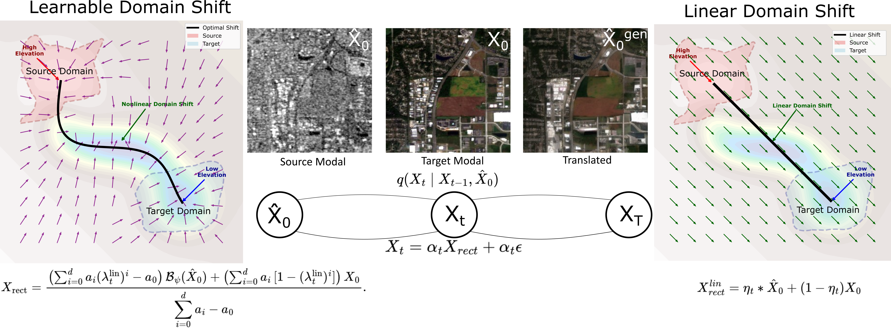
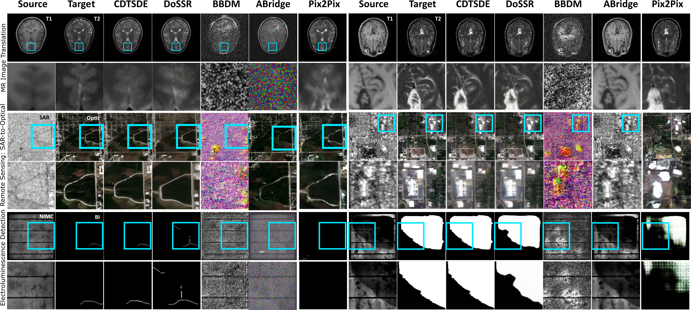
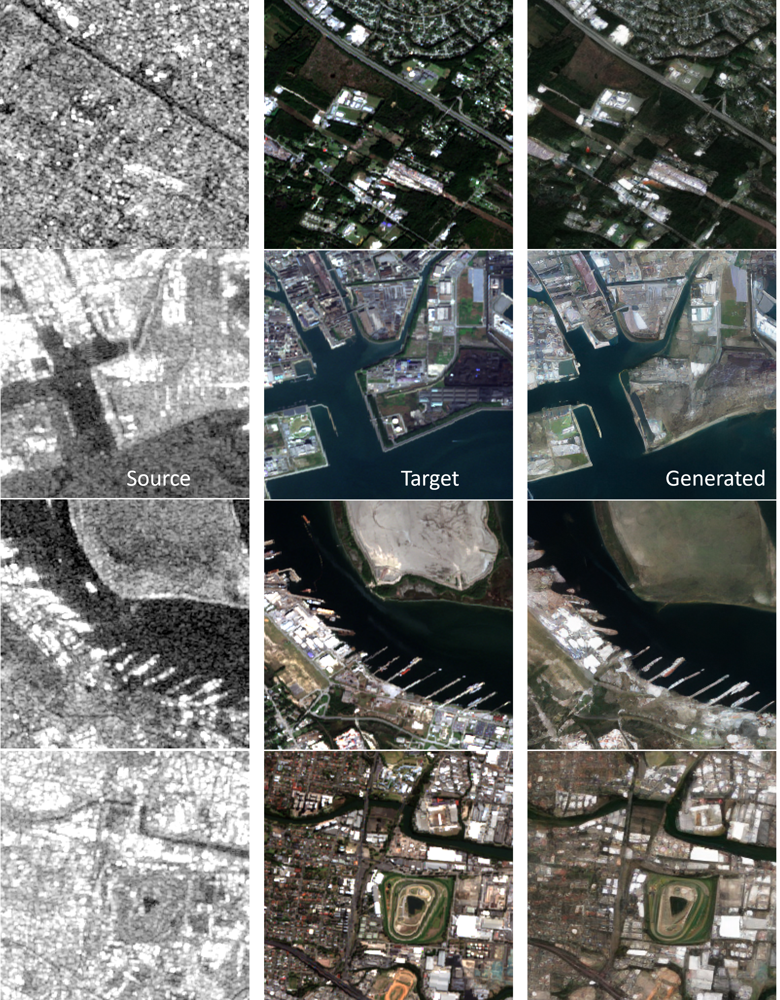
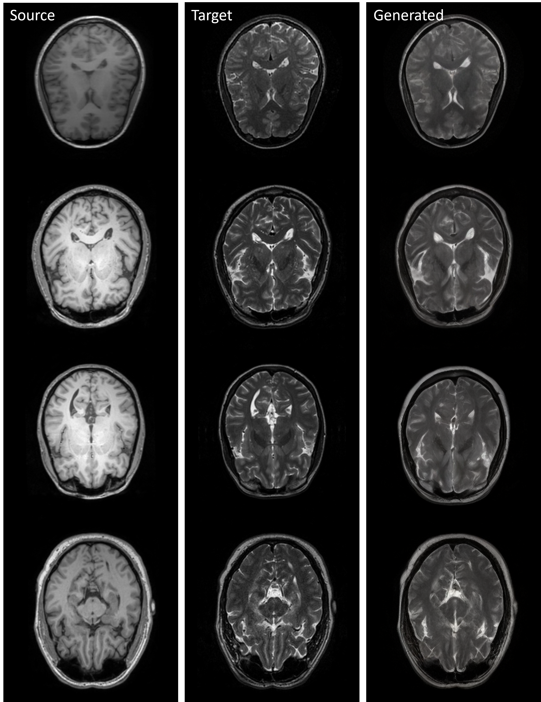
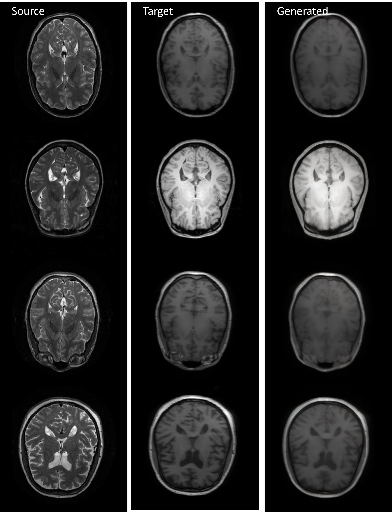
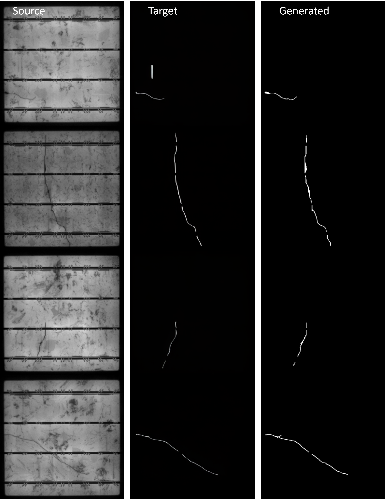

Abstract
Cross-modal image translation is brittle when diffusion models rely on fixed, global schedules between domains. CDTSDE embeds domain-shift dynamics directly into the generative process by predicting a spatially varying mixing field at each reverse step and injecting an explicit target-consistent restoration term into the drift. This keeps updates on-manifold, reduces semantic drift, and enables accurate sampling with fewer denoising steps. The method improves structural fidelity and semantic consistency across medical imaging, remote sensing, and electroluminescence semantic mapping tasks.
Method Overview

Visual Comparison

Additional Results




Resources
- Code and training instructions are in
README.md. - Figures are located in
figures/.
BibTeX
@inproceedings{
title={Adaptive Domain Shift in Diffusion Models for Cross-Modality Image Translation},
author={Zihao Wang and Yuzhou Chen and Shaogang Ren},
booktitle={The Fourteenth International Conference on Learning Representations},
year={2026},
url={https://openreview.net/forum?id=it0GTdiW9t}
}